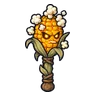

ฝักข้าวโพดป๊อป
มอนธาตุไฟ Lv 10–17
เจอที่
| แมพ | โซน | Lv | ภูมิภาค |
|---|---|---|---|
| เขาวงกตข้าวโพด | ลานหุ่นไล่กายักษ์ · ทางเข้าเขาวงกต | 10–17 | ป่ากองไฟ |
ค่าสถานะตามเลเวล
| Lv | HP | ATK | DEF | MDEF | EXP | Job |
|---|---|---|---|---|---|---|
| 10 | 726 | 25–37 | 2 | 2 | 17 | 13 |
| 13 | 1,015 | 30–46 | 3 | 2 | 20 | 15 |
| 17 | 1,310 | 38–57 | 4 | 3 | 25 | 19 |
ตีด้วยธาตุไหนดี
แรงขึ้น: น้ำ ×1.5 พิษ ×1.25
เบาลง: ดิน ×0.5 ไฟ ×0.25
วัตถุดิบที่ดรอป
| ของ | โอกาส | |
|---|---|---|
| ป๊อปคอร์นระเบิด | 55% | 1 ชิ้น (15% ได้ 2) |
อุปกรณ์ที่ดรอป (1)
| ของ | โอกาส |
|---|---|
 กระบองข้าวโพดป๊อป | 0.12% |
สกิล
กระโจน (Lv 25+) · กระโจน (Lv 60+)